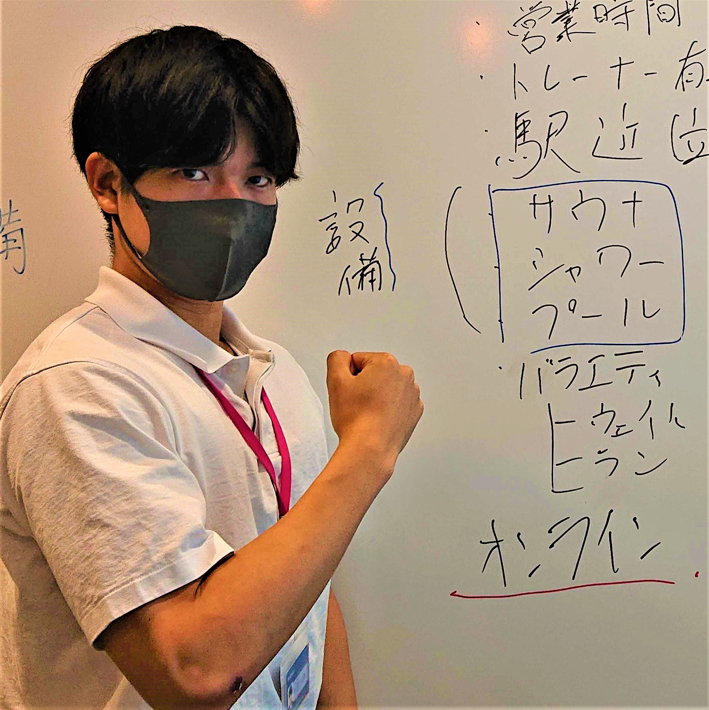
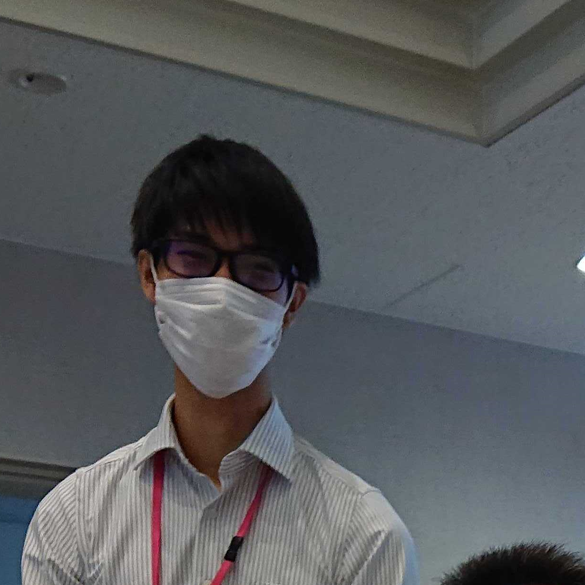

Member
-
松尾大雅 Taiga Matsuo ( Scrum Master / Author )
-
立命館大学経済学部卒業
アメリカ経済学 専攻
出身：島根
今から約24年前、縁結びの神として名高い島根県・出雲大社のほとりに生を受ける。 学生時代はSwift講師として関西を拠点に活動し、累計20人以上の中高生にiPhoneアプリをリリースさせてきた。 その後様々な縁を経てTRIにジョイン。現在は企画・開発経験を活かし、企画脚本を担当している。 -
大囿葵 Aoi Ozono ( Tech Lead / Audio Director )
-

横浜国立大学経営学部卒業
マーケティング・サイエンス 専攻
出身：東京
大学在学中の個別指導塾のアルバイトをきっかけに、教育業界に興味をもつ。 在学中のゼミでマーケティングデータを分析してきたことから、データサイエンスにも強い関心がある。 TRIでは、テックリードとして開発を主導したほか、画面やサウンドなどのUI・UXを担当している。 -
小林祐太 Yuta Kobayashi ( Project Owner / Designe )
-
北陸先端科学技術大学院大学修士課程卒業
先端科学技術 専攻
出身：新潟
学部時代に教職免許を獲得し、所属学科であった情報とのかけ合わせから情報分野における教育工学に興味を持つ。 学部・修士共に子供の発達を考慮したシステム開発に携わり、ゲーミフィケーションを取り入れた教育教材の制作を得意とする。 TRIではプロダクトオーナーに就き、全体の指揮と共にプロダクトのデザインを担当している。好きなものはサボテン。